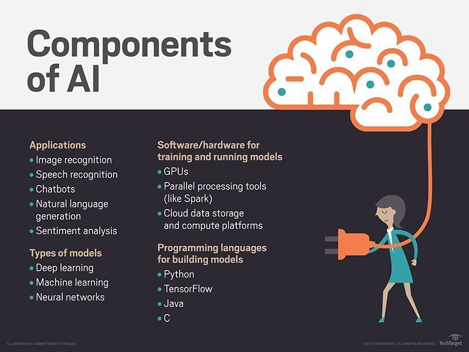

Artificial Intelligence
Artificial intelligence (AI) is the simulation of human intelligence processes by machines,
especially computer systems. These processes include learning (the acquisition of information
and rules for using the information), reasoning (using rules to reach approximate or definite
conclusions) and self-correction. Particular applications of AI include expert systems, speech
recognition and machine vision.
AI can be categorized as either weak or strong. Weak AI, also known as narrow AI, is an AI system
that is designed and trained for a particular task. Virtual personal assistants, such as Apple's
Siri, are a form of weak AI. Strong AI, also known as artificial general intelligence, is an AI
system with generalized human cognitive abilities. When presented with an unfamiliar task, a strong
AI system is able to find a solution without human intervention.
Because hardware, software and staffing costs for AI can be expensive, many vendors are including AI
components in their standard offerings, as well as access to Artificial Intelligence as a Service (AIaaS)
platforms. AI as a Service allows individuals and companies to experiment with AI for various business
purposes and sample multiple platforms before making a commitment. Popular AI cloud offerings include
Amazon AI services, IBM Watson Assistant, Microsoft Cognitive Services and Google AI services.

Types of artificial intelligence
Arend Hintze, an assistant professor of integrative biology and computer science and engineering at Michigan
State University, categorizes AI into four types, from the kind of AI systems that exist today to sentient systems,
which do not yet exist. His categories are as follows:
-
Type 1: Reactive machines.
An example is Deep Blue, the IBM chess program that beat Garry Kasparov in the 1990s. Deep Blue can identify pieces on the chess board and make predictions, but it has no memory and cannot use past experiences to inform future ones. It analyzes possible moves -- its own and its opponent -- and chooses the most strategic move. Deep Blue and Google's AlphaGO were designed for narrow purposes and cannot easily be applied to another situation.
-
Type 2: Limited memory.
These AI systems can use past experiences to inform future decisions. Some of the decision-making functions in self-driving cars are designed this way. Observations inform actions happening in the not-so-distant future, such as a car changing lanes. These observations are not stored permanently.
-
Type 3: Theory of mind.
This psychology term refers to the understanding that others have their own beliefs, desires and intentions that impact the decisions they make. This kind of AI does not yet exist.
-
Type 4: Self-awareness.
In this category, AI systems have a sense of self, have consciousness. Machines with self-awareness understand their current state and can use the information to infer what others are feeling. This type of AI does not yet exist.
AI applications
Artificial intelligence has made its way into a number of areas. Here are four examples.-
HealthCare
The biggest bets are on improving patient outcomes and reducing costs. Companies are applying machine learning to make better and faster diagnoses than humans. One of the best known healthcare technologies is IBM Watson.
-
AI in business.
Robotic process automation is being applied to highly repetitive tasks normally performed by humans. Machine learning algorithms are being integrated into analytics and CRM platforms to uncover information on how to better serve customers.
-
AI in education.
AI can automate grading, giving educators more time. AI can assess students and adapt to their needs, helping them work at their own pace. AI tutors can provide additional support to students, ensuring they stay on track.
-
AI in finance.
AI in personal finance applications, such as Mint or Turbo Tax, is disrupting financial institutions. Applications such as these collect personal data and provide financial advice. Other programs, such as IBM Watson, have been applied to the process of buying a home. Today, software performs much of the trading on Wall Street.